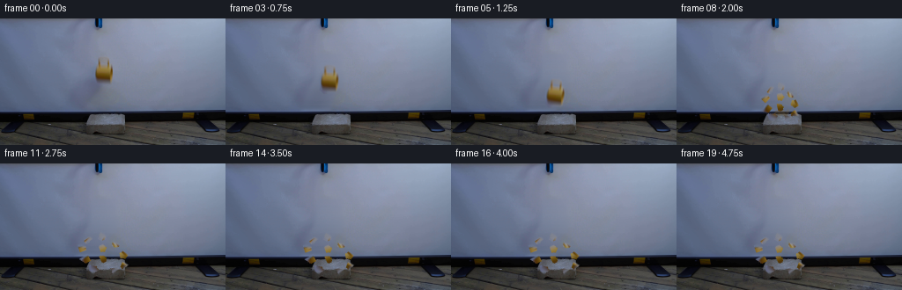

CODING AGENTS AS PIXEL WORLD MODELS
traex/GPT-5.6-Sol · 0125
点击播放 · 原生 RGB 像素
逐轮保存的候选
回放视频、检查图与代码变化。
每份候选均可单独播放。实际图片检查记录在下方工具轨迹中。
候选 01播放与检查图
点击播放 · 原生 RGB 像素

展开代码变化
--- 上一保存版本
+++ 本次保存版本
@@ -0,0 +1,219 @@
+#!/usr/bin/env python3
+"""Generate the requested locked-off mug-drop demonstration using analytic 2-D dynamics."""
+from pathlib import Path
+import cv2
+import numpy as np
+from PIL import Image
+import artifact_io
+
+ROOT = Path(__file__).resolve().parent
+H, W = 144, 256
+
+
+def smoothstep(x):
+ x = np.clip(x, 0.0, 1.0)
+ return x*x*(3.0-2.0*x)
+
+
+def affine3(m):
+ return np.vstack([m, [0.0, 0.0, 1.0]])
+
+
+def rotation_about(cx, cy, degrees):
+ return affine3(cv2.getRotationMatrix2D((float(cx), float(cy)), float(degrees), 1.0))
+
+
+def translation(dx, dy):
+ return np.array([[1., 0., dx], [0., 1., dy], [0., 0., 1.]])
+
+
+def warp_layer(rgb, alpha, matrix):
+ """Warp a premultiplied RGBA layer with a transparent border."""
+ m = matrix[:2].astype(np.float32)
+ a = cv2.warpAffine(alpha.astype(np.float32), m, (W, H), flags=cv2.INTER_LINEAR,
+ borderMode=cv2.BORDER_CONSTANT, borderValue=0)
+ premul = rgb.astype(np.float32) * alpha[..., None]
+ p = cv2.warpAffine(premul, m, (W, H), flags=cv2.INTER_LINEAR,
+ borderMode=cv2.BORDER_CONSTANT, borderValue=0)
+ c = p / np.maximum(a[..., None], 1e-5)
+ return c, np.clip(a, 0, 1)
+
+
+def over(frame, color, alpha):
+ return frame * (1.0-alpha[..., None]) + color * alpha[..., None]
+
+
+def screen_estimate(source):
+ """Fit the smooth projected-screen illumination one scanline at a time."""
+ x = np.arange(W, dtype=np.float64)
+ keep = (x < 88) | (x > 142)
+ estimate = source.astype(np.float64).copy()
+ # Object and cast shadow are confined to the smooth screen above the bench.
+ for y in range(0, 106):
+ for c in range(3):
+ coeff = np.polyfit(x[keep], source[y, keep, c], 5)
+ estimate[y, :, c] = np.polyval(coeff, x)
+ # Put back camera-like fine grain sampled from nearby clean screen, while
+ # retaining the fitted local gradient under the removed subject.
+ smooth = cv2.GaussianBlur(source.astype(np.float32), (0, 0), 2.2)
+ texture = source.astype(np.float32) - smooth
+ for y in range(36, 106):
+ for x0 in range(84, 143):
+ sx = 151 + ((x0-84) % 55)
+ estimate[y, x0] += texture[y, sx] * 0.55
+ return np.clip(estimate, 0, 255).astype(np.float32)
+
+
+def make_subject(source, background):
+ """Recover an antialiased mug matte from color/residual contrast."""
+ src = source.astype(np.float32)
+ residual = np.sqrt(np.sum((src-background)**2, axis=2))
+ yy, xx = np.mgrid[0:H, 0:W]
+ polygon = np.array([[110,42], [123,42], [126,47], [129,53], [130,64],
+ [128,71], [125,75], [111,76], [107,72], [106,58],
+ [108,50]], np.int32)
+ support = np.zeros((H, W), np.uint8)
+ cv2.fillPoly(support, [polygon], 255)
+ # Chromatic yellow is unambiguous; neutral rim/interior is retained by residual.
+ r, g, b = src.transpose(2, 0, 1)
+ chroma = np.maximum(0, r - b) + .45*np.maximum(0, r-g)
+ alpha = np.maximum(smoothstep((residual-5.0)/29.0), smoothstep((chroma-9.0)/45.0))
+ alpha *= support.astype(np.float32)/255.0
+ alpha = cv2.GaussianBlur(alpha, (3, 3), .48)
+ alpha *= cv2.dilate(support, np.ones((3,3),np.uint8)).astype(np.float32)/255.0
+ alpha[alpha < .025] = 0
+ return src, np.clip(alpha, 0, 1), residual
+
+
+def add_screen_shadow(frame, fall_y, strength=1.0):
+ """Soft directional shadow cast onto the white projection screen."""
+ # As the mug descends, its shadow follows down and contracts toward it.
+ dy = .60*fall_y
+ mask = np.zeros((H, W), np.float32)
+ pts = np.array([
+ [108, 59+dy], [126, 61+dy], [126, 70+dy],
+ [116, 92+.32*fall_y], [108, 105+.10*fall_y],
+ [88, 105+.10*fall_y], [98, 82+.46*fall_y]
+ ], np.int32)
+ cv2.fillPoly(mask, [pts], 1.0)
+ mask = cv2.GaussianBlur(mask, (0,0), 5.4)
+ # Shadow naturally vanishes against the already-dark bench.
+ fade = np.clip((108-np.arange(H))/9.0, 0, 1)[:,None]
+ mask *= fade * (.16*strength)
+ tint = np.empty_like(frame)
+ tint[:] = (49, 56, 73)
+ return over(frame, tint, mask)
+
+
+def make_fragments(alpha):
+ """Voronoi fracture map; each part retains the original ceramic texture."""
+ sites = np.array([[112,48],[120,47],[125,53],[111,56],[118,56],
+ [124,61],[111,64],[117,64],[124,69],[115,72],[121,73]], np.float32)
+ yy, xx = np.mgrid[0:H, 0:W]
+ dist = (xx[...,None]-sites[:,0])**2 + (yy[...,None]-sites[:,1])**2
+ owner = np.argmin(dist, axis=2)
+ pieces=[]
+ for i,(sx,sy) in enumerate(sites):
+ a = alpha * (owner==i)
+ if a.sum() > .2:
+ pieces.append((a, float(sx), float(sy)))
+ return pieces
+
+
+def main():
+ first = np.array(Image.open(ROOT/'first_frame.png').convert('RGB'), dtype=np.uint8)
+ assert first.shape == (H,W,3)
+ bg = screen_estimate(first)
+ subject_rgb, mug_alpha, _ = make_subject(first, bg)
+
+ # Clean plate: only replace the suspended mug and its soft screen shadow.
+ clean = first.astype(np.float32).copy()
+ remove = np.zeros((H,W), np.float32)
+ cv2.fillPoly(remove, [np.array([[105,40],[132,40],[133,76],[125,82],
+ [119,103],[86,106],[91,86],[100,68]],np.int32)], 1.0)
+ remove = cv2.GaussianBlur(remove, (0,0), 2.2)
+ screen_rows = (np.arange(H)[:,None] < 106).astype(np.float32)
+ remove *= screen_rows
+ clean = clean*(1-remove[...,None]) + bg*remove[...,None]
+
+ fragments = make_fragments(mug_alpha)
+ mug_center = np.array([118.0, 59.0, 1.0])
+ # Impact pose: 34 px descent brings the ceramic base exactly to the brick top.
+ impact = translation(1.0,34.0) @ rotation_about(mug_center[0],mug_center[1],-7.0)
+
+ # Outward impulse and eventual resting orientations for eleven irregular pieces.
+ vx = np.array([-4.7,-2.0,1.2,-5.7,-1.0,4.4,-4.0,-.4,5.0,-2.3,2.7])
+ vy = np.array([-3.1,-4.5,-3.7,-1.9,-3.0,-2.1,.0,-1.0,-.2,.8,.5])
+ spin = np.array([-27,-13,23,-36,16,34,-31,19,43,-18,25],np.float32)
+
+ frames=[]
+ for f in range(20):
+ if f == 0:
+ frames.append(first.copy())
+ continue
+ frame = clean.copy()
+ if f <= 6:
+ # Release begins gently, then a constant-gravity descent.
+ drop = np.array([1.,4.,9.,16.,25.,34.],np.float32)[f-1]
+ ang = -7.0*(drop/34.0)**1.3
+ dx = 1.0*(drop/34.0)
+ frame = add_screen_shadow(frame, drop, 1.0-drop/48.0)
+ M = translation(dx,drop) @ rotation_about(mug_center[0],mug_center[1],ang)
+ col,a = warp_layer(subject_rgb,mug_alpha,M)
+ frame = over(frame,col,a)
+ # Contact-darkening at the instant the mug reaches the block.
+ if f == 6:
+ contact=np.zeros((H,W),np.float32)
+ cv2.ellipse(contact,(120,108),(9,2),0,0,360,.22,-1)
+ contact=cv2.GaussianBlur(contact,(0,0),1.4)
+ dark=np.zeros_like(frame); dark[:]=(35,31,27)
+ frame=over(frame,dark,contact)
+ else:
+ # Brittle fracture: pieces receive an impulse, arc, bounce and settle.
+ t = float(f-6)
+ for i,(piece_alpha,sx,sy) in enumerate(fragments):
+ p0 = impact @ np.array([sx,sy,1.0])
+ if t <= 3.0:
+ dx = vx[i]*t
+ dy = vy[i]*t + 1.22*t*t
+ rot = spin[i]*t*.52
+ else:
+ # State after the initial ballistic arc.
+ dx3 = vx[i]*3.0
+ dy3 = vy[i]*3.0 + 1.22*9.0
+ rot3 = spin[i]*1.56
+ # Small damped rebound, then a fixed final rest pose.
+ u=t-3.0
+ target_dx = np.clip(dx3 + vx[i]*.38, -20, 20)
+ # All shards rest on/around the brick's upper ledge.
+ target_dy = dy3 + np.array([3,5,4,2,5,4,1,3,2,2,2])[i]
+ e = 1.0-np.exp(-1.20*u)
+ dx = dx3 + (target_dx-dx3)*e
+ dy = dy3 + (target_dy-dy3)*e - 2.2*np.exp(-1.0*u)*abs(np.sin(2.4*u))
+ rot = rot3 + spin[i]*.22*e
+ local = translation(dx,dy) @ rotation_about(p0[0],p0[1],rot) @ impact
+ col,a = warp_layer(subject_rgb,piece_alpha,local)
+ frame = over(frame,col,a)
+
+ # Fine chips/dust at impact, short-lived and physically localized.
+ if f <= 10:
+ dust=np.zeros((H,W),np.float32)
+ tt=f-6
+ for j in range(13):
+ x=int(119 + (j-6)*(.7+.28*tt))
+ y=int(107 - ((j*7)%5)*.55*tt + .65*tt*tt)
+ if 0<=x<W and 0<=y<H:
+ cv2.circle(dust,(x,y),1 if j%4 else 2,.12*(11-f),-1)
+ dust=cv2.GaussianBlur(dust,(0,0),.75)
+ ochre=np.zeros_like(frame); ochre[:]=(126,100,48)
+ frame=over(frame,ochre,np.clip(dust,0,.34))
+
+ frames.append(np.clip(np.rint(frame),0,255).astype(np.uint8))
+
+ frames=np.stack(frames)
+ assert frames.shape==(20,H,W,3) and frames.dtype==np.uint8
+ assert np.array_equal(frames[0],first)
+ artifact_io.save(frames,ROOT)
+
+if __name__ == '__main__':
+ main()
候选 02播放与检查图
点击播放 · 原生 RGB 像素

展开代码变化
--- 上一保存版本
+++ 本次保存版本
@@ -185,8 +185,11 @@
# Small damped rebound, then a fixed final rest pose.
u=t-3.0
target_dx = np.clip(dx3 + vx[i]*.38, -20, 20)
- # All shards rest on/around the brick's upper ledge.
- target_dy = dy3 + np.array([3,5,4,2,5,4,1,3,2,2,2])[i]
+ # Central shards come to rest on the concrete's top edge
+ # (y~=107); the two fastest side shards tumble just over it.
+ rest_y = np.array([107,105,106,113,106,111,120,108,119,111,113],
+ np.float32)[i]
+ target_dy = rest_y - p0[1]
e = 1.0-np.exp(-1.20*u)
dx = dx3 + (target_dx-dx3)*e
dy = dy3 + (target_dy-dy3)*e - 2.2*np.exp(-1.0*u)*abs(np.sin(2.4*u))
候选 03播放与检查图
可观测工具轨迹
实际执行的命令与返回图片。
命令 1exit 0
/bin/bash -lc 'cat GENERATION_RULES.md'
命令 2exit 0
/bin/bash -lc 'cat prompt.txt'
命令 3exit 127
/bin/bash -lc "find . -maxdepth 2 -type f -printf '%p\\n' | sort && file first_frame.png"
命令 4exit 0
/bin/bash -lc "python3 - <<'PY'
from PIL import Image
import numpy as np
im=np.array(Image.open('first_frame.png').convert('RGB'))
print(im.shape, im.dtype, im.min(), im.max())
# global stats / representative quantized colors
print('mean',im.mean((0,1)), 'std', im.std((0,1)))
q=(im//16)*16
u,c=np.unique(q.reshape(-1,3),axis=0,return_counts=True)
for i in np.argsort(c)[-30:][::-1]: print(tuple(u[i]),int(c[i]))
# row and col luminance / saturation aggregates every 4
mx=im.max(2); mn=im.min(2); sat=mx-mn; lum=im.mean(2)
print('rows y: meanlum meansat darkfrac yellowfrac bluefrac')
for y in range(0,144,4):
sl=slice(y,min(y+4,144)); yellow=(im[sl,:,0]>130)&(im[sl,:,0]>im[sl,:,2]*1.35)&(im[sl,:,1]>70); blue=(im[sl,:,2]>im[sl,:,0]*1.15)&(im[sl,:,2]>im[sl,:,1]*1.05); dark=lum[sl]<70
print(y, *(round(float(x),1) for x in [lum[sl].mean(),sat[sl].mean(),100*dark.mean(),100*yellow.mean(),100*blue.mean()]))
print('cols x similar')
for x in range(0,256,8):
sl=slice(x,min(x+8,256)); yellow=(im[:,sl,0]>130)&(im[:,sl,0]>im[:,sl,2]*1.35)&(im[:,sl,1]>70); blue=(im[:,sl,2]>im[:,sl,0]*1.15)&(im[:,sl,2]>im[:,sl,1]*1.05); dark=lum[:,sl]<70
print(x, *(round(float(z),1) for z in [lum[:,sl].mean(),sat[:,sl].mean(),100*dark.mean(),100*yellow.mean(),100*blue.mean()]))
PY"命令 5exit 0
/bin/bash -lc "python3 - <<'PY'
from PIL import Image
import numpy as np
from scipy.ndimage import label
im=np.array(Image.open('first_frame.png').convert('RGB'))
r,g,b=im.transpose(2,0,1); lum=im.mean(2)
# masks report
masks={
'yellow':(r>100)&(r>g*1.05)&(r>b*1.35),
'yellow_strict':(r>120)&(g>65)&(r>b*1.5)&(r>g*1.12),
'dark':lum<60,
'verydark':lum<35,
'blue':(b>r*1.25)&(b>g*1.08)&(b>40),
'neutral':(np.maximum.reduce([r,g,b])-np.minimum.reduce([r,g,b])<15)
}
for n,m in masks.items():
lab,num=label(m)
comps=[]
for k in range(1,num+1):
ys,xs=np.where(lab==k); s=len(xs)
if s>=5: comps.append((s,(xs.min(),ys.min(),xs.max(),ys.max()),tuple(np.round(im[ys,xs].mean(0),1))))
print('\\n',n, int(m.sum()), sorted(comps,reverse=True)[:20])
# character map 2x2, x70:170,y0:110
# chars: K black, d dark, Y yellow, o ochre, W light bg, B blue, G neutral
for y0,y1,x0,x1 in [(0,108,64,176),(40,112,88,152),(90,144,64,232)]:
print(f'\\nMAP x{x0}:{x1} y{y0}:{y1} scale2')
for y in range(y0,y1,2):
s=''
for x in range(x0,x1,2):
p=im[y:y+2,x:x+2].mean((0,1)); R,G,B=p; L=p.mean(); mx=max(p); mn=min(p)
if L<20:c='K'
elif L<45:c='d'
elif R>110 and R>B*1.35 and R>G*1.05:c='Y'
elif R>80 and R>B*1.2:c='o'
elif B>R*1.3 and B>G*1.1 and L<110:c='b'
elif L<75:c='x'
elif L<105:c='g'
elif L<135:c='.'
elif L<160:c='+'
else:c='W'
s+=c
print(f'{y:03d} {s}')
PY"命令 6exit 0
/bin/bash -lc "python3 - <<'PY'
from PIL import Image
import numpy as np
from scipy.ndimage import gaussian_filter
im=np.array(Image.open('first_frame.png').convert('RGB')).astype(float)
# local smooth residual norm at sig4
bg=gaussian_filter(im,(4,4,0)); d=np.sqrt(((im-bg)**2).sum(2))
# print exact intensity and rgb category each pixel x95:135
for y in range(0,85):
s=''
for x in range(92,140):
R,G,B=im[y,x]; L=(R+G+B)/3; D=d[y,x]
# dominant outliers
if R>G*1.1 and R>B*1.45 and R>100: c='Y'
elif R>G*1.03 and R>B*1.25 and R>70:c='o'
elif L<25:c='#'
elif L<45:c='K'
elif L<65:c='d'
elif D>55:c='X'
elif D>35:c='x'
elif D>20:c='"'!'"'
elif B>R*1.4 and L<100:c='b'
elif L<90:c='g'
elif L<115:c='.'
elif L<140:c='+'
elif L<160:c='w'
else:c='W'
s+=c
print(f'{y:03d} {s}')
# stats for selected x around rod across y
print('pixels x106..126 selected rows')
for y in list(range(0,20,2))+list(range(40,78)):
print(y, ['%d/%d/%d'%tuple(im[y,x].astype(int)) for x in range(106,130,2)])
PY"命令 7exit 0
/bin/bash -lc "command -v ffmpeg || true; command -v python3; command -v chafa || true; command -v viu || true; command -v jp2 || true; command -v img2txt || true; python3 - <<'PY'
try: import cv2; print('cv2 yes')
except Exception as e: print(e)
try: import imageio; print('imageio yes')
except: pass
try: import skimage; print('skimage yes')
except: pass
PY
sed -n '1,240p' artifact_io.py"命令 8exit 0
/bin/bash -lc "python3 - <<'PY'
import cv2, numpy as np
from PIL import Image
from scipy.ndimage import gaussian_filter, label
im=np.array(Image.open('first_frame.png').convert('RGB')).astype(float)
# Screen background estimate: robust smooth large median then gaussian
for k in [9,15,25,41]:
bg=np.empty_like(im)
for c in range(3): bg[:,:,c]=cv2.medianBlur(im[:,:,c].astype(np.uint8),k)
d=np.sqrt(((im-bg)**2).sum(2))
print('\\nk',k,'mean',d[:105].mean(),'max',d.max())
for th in [20,30,45,60]:
lab,n=label((d>th)&(np.indices(d.shape)[0]<105))
cs=[]
for i in range(1,n+1):
ys,xs=np.where(lab==i)
if len(xs)>5:cs.append((len(xs),(xs.min(),ys.min(),xs.max(),ys.max()),round(d[ys,xs].mean(),1)))
print(th,sorted(cs,reverse=True)[:12])
# edge contours cv2 boundaries screen
gray=cv2.cvtColor(im.astype('uint8'),cv2.COLOR_RGB2GRAY)
ed=cv2.Canny(gray,25,60)
num,lab,st,cent=cv2.connectedComponentsWithStats(ed)
print('edges')
print(sorted([(s[4],tuple(s[:4])) for s in st[1:] if s[4]>4],reverse=True)[:30])
PY"命令 9exit 0
/bin/bash -lc "python3 - <<'PY'
from PIL import Image
import numpy as np
im=np.array(Image.open('first_frame.png').convert('RGB')).astype(float)
X=np.arange(256); ex=np.ones(256,bool);ex[95:140]=False
# per row channel polynomial deg3
bg=np.zeros_like(im)
for y in range(105):
for c in range(3):
z=np.polyfit(X[ex],im[y,ex,c],5);bg[y,:,c]=np.polyval(z,X)
d=np.sqrt(((im-bg)**2).sum(2)); sg=((im-bg)).mean(2)
for y in range(0,80):
s=''
for x in range(95,140):
D=d[y,x]; S=sg[y,x]
if D>100:c='X'
elif D>70:c='A'
elif D>45:c='O'
elif D>30:c='o'
elif D>20:c='"'!'"'
elif D>12:c='.'
else:c=' '
s+=c
print(f'{y:03d} {s} {d[y,95:140].max():.0f}')
PY"命令 10exit 0
/bin/bash -lc "python3 - <<'PY'
from PIL import Image
import numpy as np
im=np.array(Image.open('first_frame.png').convert('RGB'))
for y in range(96,136):
s=''
for x in range(60,181):
R,G,B=map(int,im[y,x]);L=(R+G+B)/3; mx=max(R,G,B);mn=min(R,G,B)
if L<15:c='#'
elif L<30:c='K'
elif L<45:c='d'
elif L<60:c='x'
elif L<75:c='g'
elif L<90:c='o'
elif L<105:c='.'
elif L<120:c='+'
elif L<135:c='w'
elif L<150:c='W'
else:c='A'
s+=c
print(f'{y:03d} {s}')
PY"命令 11exit 0
/bin/bash -lc "python3 - <<'PY'
from PIL import Image
import numpy as np
im=np.array(Image.open('first_frame.png').convert('RGB')).astype(float)
X=np.arange(256);ex=(X<95)|(X>140);bg=np.zeros_like(im)
for y in range(105):
for c in range(3): bg[y,:,c]=np.polyval(np.polyfit(X[ex],im[y,ex,c],5),X)
d=np.sqrt(((im-bg)**2).sum(2))
for y in range(40,86):
xs=np.where(d[y]>12)[0]; xs=xs[(xs>90)&(xs<145)]
# intervals
ints=[]
if len(xs):
q=np.r_[0,np.where(np.diff(xs)>1)[0]+1,len(xs)]
ints=[(xs[a],xs[b-1],int(d[y,xs[a:b]].max())) for a,b in zip(q[:-1],q[1:])]
print(y,ints)
PY"命令 12exit 0
/bin/bash -lc "cat > generate.py <<'PY'
#"'!/usr/bin/env python3
"""Generate the requested locked-off mug-drop demonstration using analytic 2-D dynamics."""
from pathlib import Path
import cv2
import numpy as np
from PIL import Image
import artifact_io
ROOT = Path(__file__).resolve().parent
H, W = 144, 256
def smoothstep(x):
x = np.clip(x, 0.0, 1.0)
return x*x*(3.0-2.0*x)
def affine3(m):
return np.vstack([m, [0.0, 0.0, 1.0]])
def rotation_about(cx, cy, degrees):
return affine3(cv2.getRotationMatrix2D((float(cx), float(cy)), float(degrees), 1.0))
def translation(dx, dy):
return np.array([[1., 0., dx], [0., 1., dy], [0., 0., 1.]])
def warp_layer(rgb, alpha, matrix):
"""Warp a premultiplied RGBA layer with a transparent border."""
m = matrix[:2].astype(np.float32)
a = cv2.warpAffine(alpha.astype(np.float32), m, (W, H), flags=cv2.INTER_LINEAR,
borderMode=cv2.BORDER_CONSTANT, borderValue=0)
premul = rgb.astype(np.float32) * alpha[..., None]
p = cv2.warpAffine(premul, m, (W, H), flags=cv2.INTER_LINEAR,
borderMode=cv2.BORDER_CONSTANT, borderValue=0)
c = p / np.maximum(a[..., None], 1e-5)
return c, np.clip(a, 0, 1)
def over(frame, color, alpha):
return frame * (1.0-alpha[..., None]) + color * alpha[..., None]
def screen_estimate(source):
"""Fit the smooth projected-screen illumination one scanline at a time."""
x = np.arange(W, dtype=np.float64)
keep = (x < 88) | (x > 142)
estimate = source.astype(np.float64).copy()
# Object and cast shadow are confined to the smooth screen above the bench.
for y in range(0, 106):
for c in range(3):
coeff = np.polyfit(x[keep], source[y, keep, c], 5)
estimate[y, :, c] = np.polyval(coeff, x)
# Put back camera-like fine grain sampled from nearby clean screen, while
# retaining the fitted local gradient under the removed subject.
smooth = cv2.GaussianBlur(source.astype(np.float32), (0, 0), 2.2)
texture = source.astype(np.float32) - smooth
for y in range(36, 106):
for x0 in range(84, 143):
sx = 151 + ((x0-84) % 55)
estimate[y, x0] += texture[y, sx] * 0.55
return np.clip(estimate, 0, 255).astype(np.float32)
def make_subject(source, background):
"""Recover an antialiased mug matte from color/residual contrast."""
src = source.astype(np.float32)
residual = np.sqrt(np.sum((src-background)**2, axis=2))
yy, xx = np.mgrid[0:H, 0:W]
polygon = np.array([[110,42], [123,42], [126,47], [129,53], [130,64],
[128,71], [125,75], [111,76], [107,72], [106,58],
[108,50]], np.int32)
support = np.zeros((H, W), np.uint8)
cv2.fillPoly(support, [polygon], 255)
# Chromatic yellow is unambiguous; neutral rim/interior is retained by residual.
r, g, b = src.transpose(2, 0, 1)
chroma = np.maximum(0, r - b) + .45*np.maximum(0, r-g)
alpha = np.maximum(smoothstep((residual-5.0)/29.0), smoothstep((chroma-9.0)/45.0))
alpha *= support.astype(np.float32)/255.0
alpha = cv2.GaussianBlur(alpha, (3, 3), .48)
alpha *= cv2.dilate(support, np.ones((3,3),np.uint8)).astype(np.float32)/255.0
alpha[alpha < .025] = 0
return src, np.clip(alpha, 0, 1), residual
def add_screen_shadow(frame, fall_y, strength=1.0):
"""Soft directional shadow cast onto the white projection screen."""
# As the mug descends, its shadow follows down and contracts toward it.
dy = .60*fall_y
mask = np.zeros((H, W), np.float32)
pts = np.array([
[108, 59+dy], [126, 61+dy], [126, 70+dy],
[116, 92+.32*fall_y], [108, 105+.10*fall_y],
[88, 105+.10*fall_y], [98, 82+.46*fall_y]
], np.int32)
cv2.fillPoly(mask, [pts], 1.0)
mask = cv2.GaussianBlur(mask, (0,0), 5.4)
# Shadow naturally vanishes against the already-dark bench.
fade = np.clip((108-np.arange(H))/9.0, 0, 1)[:,None]
mask *= fade * (.16*strength)
tint = np.empty_like(frame)
tint[:] = (49, 56, 73)
return over(frame, tint, mask)
def make_fragments(alpha):
"""Voronoi fracture map; each part retains the original ceramic texture."""
sites = np.array([[112,48],[120,47],[125,53],[111,56],[118,56],
[124,61],[111,64],[117,64],[124,69],[115,72],[121,73]], np.float32)
yy, xx = np.mgrid[0:H, 0:W]
dist = (xx[...,None]-sites[:,0])**2 + (yy[...,None]-sites[:,1])**2
owner = np.argmin(dist, axis=2)
pieces=[]
for i,(sx,sy) in enumerate(sites):
a = alpha * (owner==i)
if a.sum() > .2:
pieces.append((a, float(sx), float(sy)))
return pieces
def main():
first = np.array(Image.open(ROOT/'"'first_frame.png').convert('RGB'), dtype=np.uint8)
assert first.shape == (H,W,3)
bg = screen_estimate(first)
subject_rgb, mug_alpha, _ = make_subject(first, bg)
# Clean plate: only replace the suspended mug and its soft screen shadow.
clean = first.astype(np.float32).copy()
remove = np.zeros((H,W), np.float32)
cv2.fillPoly(remove, [np.array([[105,40],[132,40],[133,76],[125,82],
[119,103],[86,106],[91,86],[100,68]],np.int32)], 1.0)
remove = cv2.GaussianBlur(remove, (0,0), 2.2)
screen_rows = (np.arange(H)[:,None] < 106).astype(np.float32)
remove *= screen_rows
clean = clean*(1-remove[...,None]) + bg*remove[...,None]
fragments = make_fragments(mug_alpha)
mug_center = np.array([118.0, 59.0, 1.0])
# Impact pose: 34 px descent brings the ceramic base exactly to the brick top.
impact = translation(1.0,34.0) @ rotation_about(mug_center[0],mug_center[1],-7.0)
# Outward impulse and eventual resting orientations for eleven irregular pieces.
vx = np.array([-4.7,-2.0,1.2,-5.7,-1.0,4.4,-4.0,-.4,5.0,-2.3,2.7])
vy = np.array([-3.1,-4.5,-3.7,-1.9,-3.0,-2.1,.0,-1.0,-.2,.8,.5])
spin = np.array([-27,-13,23,-36,16,34,-31,19,43,-18,25],np.float32)
frames=[]
for f in range(20):
if f == 0:
frames.append(first.copy())
continue
frame = clean.copy()
if f <= 6:
# Release begins gently, then a constant-gravity descent.
drop = np.array([1.,4.,9.,16.,25.,34.],np.float32)[f-1]
ang = -7.0*(drop/34.0)**1.3
dx = 1.0*(drop/34.0)
frame = add_screen_shadow(frame, drop, 1.0-drop/48.0)
M = translation(dx,drop) @ rotation_about(mug_center[0],mug_center[1],ang)
col,a = warp_layer(subject_rgb,mug_alpha,M)
frame = over(frame,col,a)
# Contact-darkening at the instant the mug reaches the block.
if f == 6:
contact=np.zeros((H,W),np.float32)
cv2.ellipse(contact,(120,108),(9,2),0,0,360,.22,-1)
contact=cv2.GaussianBlur(contact,(0,0),1.4)
dark=np.zeros_like(frame); dark[:]=(35,31,27)
frame=over(frame,dark,contact)
else:
# Brittle fracture: pieces receive an impulse, arc, bounce and settle.
t = float(f-6)
for i,(piece_alpha,sx,sy) in enumerate(fragments):
p0 = impact @ np.array([sx,sy,1.0])
if t <= 3.0:
dx = vx[i]*t
dy = vy[i]*t + 1.22*t*t
rot = spin[i]*t*.52
else:
# State after the initial ballistic arc.
dx3 = vx[i]*3.0
dy3 = vy[i]*3.0 + 1.22*9.0
rot3 = spin[i]*1.56
# Small damped rebound, then a fixed final rest pose.
u=t-3.0
target_dx = np.clip(dx3 + vx[i]*.38, -20, 20)
# All shards rest on/around the brick's upper ledge.
target_dy = dy3 + np.array([3,5,4,2,5,4,1,3,2,2,2])[i]
e = 1.0-np.exp(-1.20*u)
dx = dx3 + (target_dx-dx3)*e
dy = dy3 + (target_dy-dy3)*e - 2.2*np.exp(-1.0*u)*abs(np.sin(2.4*u))
rot = rot3 + spin[i]*.22*e
local = translation(dx,dy) @ rotation_about(p0[0],p0[1],rot) @ impact
col,a = warp_layer(subject_rgb,piece_alpha,local)
frame = over(frame,col,a)
# Fine chips/dust at impact, short-lived and physically localized.
if f <= 10:
dust=np.zeros((H,W),np.float32)
tt=f-6
for j in range(13):
x=int(119 + (j-6)*(.7+.28*tt))
y=int(107 - ((j*7)%5)*.55*tt + .65*tt*tt)
if 0<=x<W and 0<=y<H:
cv2.circle(dust,(x,y),1 if j%4 else 2,.12*(11-f),-1)
dust=cv2.GaussianBlur(dust,(0,0),.75)
ochre=np.zeros_like(frame); ochre[:]=(126,100,48)
frame=over(frame,ochre,np.clip(dust,0,.34))
frames.append(np.clip(np.rint(frame),0,255).astype(np.uint8))
frames=np.stack(frames)
assert frames.shape==(20,H,W,3) and frames.dtype==np.uint8
assert np.array_equal(frames[0],first)
artifact_io.save(frames,ROOT)
if __name__ == '__main__':
main()
PY
python3 generate.py
python3 - <<'PY'
from pathlib import Path
import numpy as np
from PIL import Image
im=np.array(Image.open('first_frame.png').convert('RGB'))
fr=np.stack([np.array(Image.open(f'frames/{i:02d}.png').convert('RGB')) for i in range(20)])
print('shape',fr.shape,fr.dtype,'frame0_equal',np.array_equal(fr[0],im))
for i in range(20):
d=np.abs(fr[i].astype(int)-fr[0].astype(int)); changed=np.any(d,2)
ys,xs=np.where(changed)
print(i,'changed',changed.sum(),'mae',round(d.mean(),3),'bbox',None if not len(xs) else (xs.min(),ys.min(),xs.max(),ys.max()),'max',d.max())
PY"命令 13exit 0
/bin/bash -lc "python3 - <<'PY'
import generate
from PIL import Image
import numpy as np
src=np.array(Image.open('first_frame.png').convert('RGB')); bg=generate.screen_estimate(src); rgb,a,res=generate.make_subject(src,bg)
print('alpha sum',a.sum(),'pixels >',[(z,int((a>z).sum())) for z in [.05,.2,.5,.8]],'bbox',end=' ')
y,x=np.where(a>.05); print(x.min(),y.min(),x.max(),y.max())
for y0 in range(40,82):
s=''
for x0 in range(95,136):
z=a[y0,x0]
s += ' ' if z<.03 else '.' if z<.2 else '+' if z<.5 else 'O' if z<.8 else '#'
print(f'{y0:03} {s}')
print('yellow by frames')
for f in range(20):
im=np.array(Image.open(f'frames/{f:02d}.png'))
r,g,b=im.transpose(2,0,1);m=(r>80)&(r>b*1.35)&(r>g*1.05)
y,x=np.where(m)
print(f, len(x), None if not len(x) else (x.min(),y.min(),x.max(),y.max(),round(x.mean(),1),round(y.mean(),1)))
PY"命令 14exit 0
/bin/bash -lc "python3 - <<'PY'
from PIL import Image
import numpy as np
from scipy.ndimage import label
im=np.array(Image.open('first_frame.png').convert('RGB')).astype(float); X=np.arange(256)
for keep_desc,keep in [('wide',(X<55)|(X>150)),('right',(X>145))]:
bg=np.empty_like(im)
for y in range(105):
for c in range(3): bg[y,:,c]=np.polyval(np.polyfit(X[keep],im[y,keep,c],3),X)
d=np.sqrt(((im-bg)**2).sum(2))
print(keep_desc)
for th in [10,15,20,30]:
lab,n=label((d>th)&(np.indices(d.shape)[0]<105))
cs=[]
for i in range(1,n+1):
y,x=np.where(lab==i)
if len(x)>10:cs.append((len(x),(x.min(),y.min(),x.max(),y.max()),round(d[y,x].mean(),1)))
print(th,sorted(cs,reverse=True)[:10])
print('rows intervals threshold15')
for y in range(60,105,2):
xs=np.where(d[y]>15)[0]
ints=[]
if len(xs):
q=np.r_[0,np.where(np.diff(xs)>1)[0]+1,len(xs)]
ints=[(xs[a],xs[b-1]) for a,b in zip(q[:-1],q[1:]) if xs[b-1]-xs[a]>1]
print(y,ints)
PY"命令 15exit 0
/bin/bash -lc "python3 generate.py && python3 - <<'PY'
from pathlib import Path
from PIL import Image
import numpy as np
first=np.array(Image.open('first_frame.png').convert('RGB'))
fr=np.stack([np.array(Image.open(f'frames/{i:02d}.png')) for i in range(20)])
assert fr.shape==(20,144,256,3) and fr.dtype==np.uint8 and np.array_equal(fr[0],first)
# Detect yellow ceramic and list component boxes at representative frames.
from scipy.ndimage import label
for i in [0,1,3,5,6,7,8,9,11,15,19]:
r,g,b=fr[i].transpose(2,0,1)
m=(r>80)&(r>b*1.35)&(r>g*1.05)
lab,n=label(m)
cc=[]
for k in range(1,n+1):
y,x=np.where(lab==k)
if len(x)>=2: cc.append((len(x),(int(x.min()),int(y.min()),int(x.max()),int(y.max()))))
print(i, sorted(cc,reverse=True)[:8])
print('outputs',[(p.name,p.stat().st_size) for p in [Path('pixels.npz'),Path('index.html'),Path('inspection.png')]])
PY
python3 -m py_compile generate.py
find frames -maxdepth 1 -name '*.png' | wc -l"保存候选 3 份；完成命令 15 次；可验证图片返回 0 张。原始 API 响应与完整日志保留在本地。